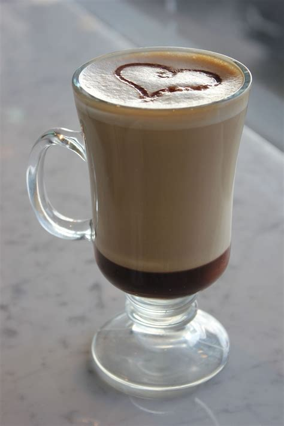
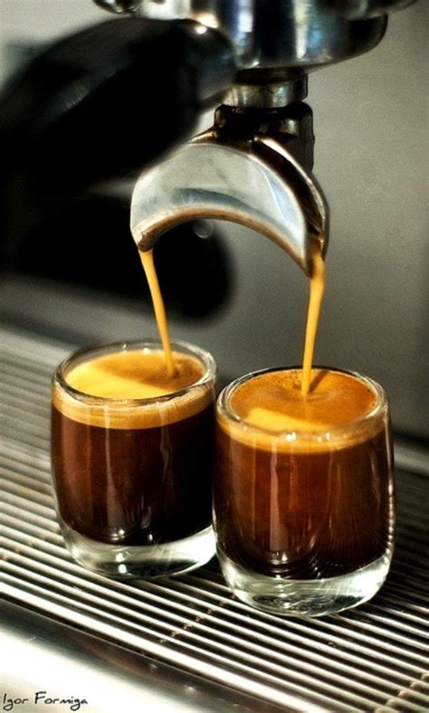

Recetas

Mocaccino
- Preparar el café de la manera habitual. Si se cuenta con cafetera italiana, se puede hacer un café expresso; si no es así, servirá el café normal que tomamos en casa, tan cargado como guste.
- A continuación, en una cacerola mezclar la media taza de leche con las cucharadas de caco en polvo y el azúcar. Llevar a fuego lento y remover hasta que se mezclen los ingredientes y se disuelvan completamente.
- Antes de que hierva, retirar la leche con chocolate del fuego y con una varilla o licuadora, batir bien hasta que forme una espuma.
- Echar esta mezcla de leche con chocolate espumosa sobre el café ya preparado, consiguiendo dos capas diferentes.
- Para darle un toque especial, espolvorear una pequeña cantidad de canela o chocolate rallado o en polvo. También quedan deliciosos y muy vistosos los chips de chocolate blanco o negros.
- Para quienes disfrutan de la decoración y el sabor, se puede terminar la bebida con nata montada. En ese caso, después de servir, montar la nata y poner una cucharada pequeña encima de la preparación.
Café con leche
- Prepara el café muy cargado, pero procura que la cantidad sea similar a la del espresso
- En un tarro con tapa, vacía la leche hasta la mitad, luego cierra bien la tapa y agita bien de 10 a 30 segundos para que la leche produzca espuma y duplique su volumen
- Luego de agitar la leche, caliéntala en el microondas por 30 segundos, es importante que retires la tapa o utilices un recipiente adecuado, el calor que se le aplicará hará que se estabilice la leche
- En una taza o un vaso de vidrio vierte el café luego con ayuda de una cuchara añade la leche, evitando que toda la espuma se vaya al café
- Finalmente pon en la parte superior de la bebida un poco de espuma que quedó en el tarro y endulza.

Espresso
- Haz un "tiro en blanco": precalienta la máquina haciendo correr agua a través del portafiltro y la taza sin usar ningún espresso.
- Muele los granos de café enteros: haz la molienda justo antes de preparar tu café. Para obtener el sabor perfecto, debes buscar una textura similar a la del azúcar granulado.
- Llena el portafiltro: para un solo shot de espresso, usa aproximadamente 6 g de granos molidos (una cucharadita llena). Utiliza 17 g (una cucharada sopera llena) de granos molidos para un espresso doble.
- Apisona tu café: comprime el café molido hasta que quede uniforme para garantizar la consistencia cuando pase el agua.
- Prepara el espresso: inserta el portafiltro en la máquina con tu taza debajo. Ten listo un temporizador para asegurarte de que el tiempo de preparación sea de 20 a 30 segundos.